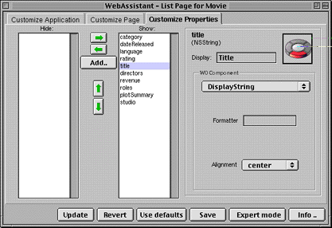

PATH
WebObjects 4.0 Documentation >
WebObjects Tools and Techniques
 Table of Contents
Table of Contents  Previous Section
Previous Section
Setting Which Properties are Displayed
The Customize Properties display of the WebAssistant enables you to specify which properties of an entity appear in a page (or component) and the order in which these properties appear. Most of the user-interface elements for accomplishing these things are in the left half of the display; note the Hide and Show columns along with their associated buttons in the following example:

All the entity's properties (attributes and relationships) are listed in the Show column, in the order in which they are displayed in the page. Properties in the Hide column are not displayed in the page. For each property, you can:
By default, the WebAssistant shows only class properties. If you want to show a custom method or a keypath, click the Add button. A dialog box is displayed in which you can entery your custom key or key path (for example, "studio.budget").
You can also change the title for a property by editing the string in the Display Name field. This change only affects the way the entity is labeled in the page, and has no effect on the actual entity name.
Table of Contents  Next Section
Next Section